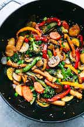

Stir-Fry

Description
Stir frying vegetables is a quick and easy way to make a tast and healthy dish. This method of cooking is inpired by Asian cuisine. Once prepared, these veggies can be served with rice, noodles, or as a standalone meal.
Ingredients
- Olive Oil
- Garlic
- Ginger
- Onion
- Scalions
- Carrots
- Broccoli
- Mushrooms
- Bell Peppers
- Peas
- Baby Corn
- Water Chestnuts
- Stir Fry Sauce
- Soy Sauce
- Vinegar
- Sesame Oil
- Cornstarch
- Brown Sugar
- Minced Garlic
- Minced Ginger
Steps
- Heat oil in a wok
- Chop up ginger and garlic, then fry in oil till aromatic
- Add chopped veggetables and stir frequently
- Mix sauce ingredients in a bowl
- 5 minutes before vegetables are cooked, add stir fry sauce to the wok and mix in with veggetables
- Once veggetables are cooked, remove from heat and serve in bowl or with rice/noodles